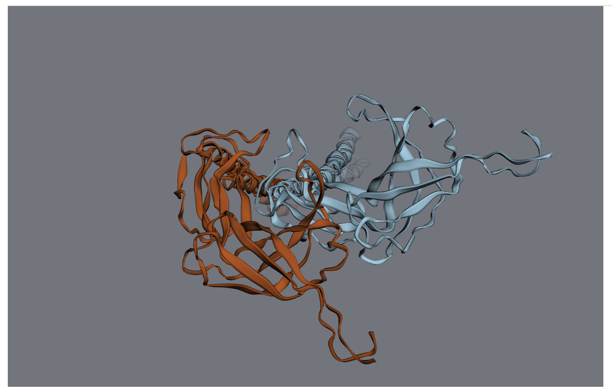
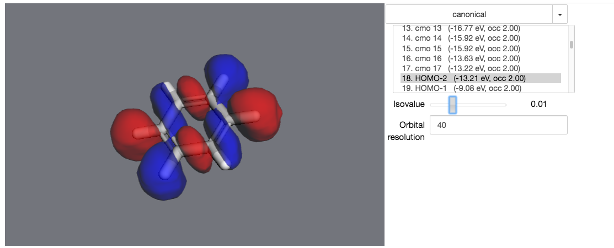

How do I ...?¶
Quick guides to common tasks
How do I create a small molecule?¶
You can use an IUPAC name:
>>> import moldesign as mdt
>>> benzene = mdt.from_name('benzene')
>>> caffeine = mdt.from_name('1,3,7-Trimethylpurine-2,6-dione')
or a SMILES string
>>> benzene = mdt.from_smiles('c1ccccc1')
>>> caffeine = mdt.from_smiles('CN1C=NC2=C1C(=O)N(C(=O)N2C)C')
or read it from a number of file formats:
>>> benzene = mdt.read('/home/myuser/benzene.sdf')
>>> caffeine = mdt.read('/home/myuser/caffeine.xyz')
How do I import a biomolecule?¶
Basic PDB structures¶
If you’re looking for a specific biomolecule, you’ll find its structure on the RCSB Protein Databank (PDB) (if a structure exists). Structures in PDB are indexed with 4-character codes (such as 1MBN, 3AID, 3FPP, ...).
To download a structure with a specific PDB code, you can use
>>> mol = mdt.from_pdb('3AID') >>> mol.draw()
You can, of course, also read in files from a variety of formats:
>>> mol = mdt.read('/path/to/3AID.pdb')
Biomolecular assemblies¶
Many biomolecules in the PDB only contain a subset of the total biomolecular structure - the remaining parts of the structure can be generated via symmetry transformations.
When you read in such a structure, MDT will issue a warning.
>>> mol = mdt.from_pdb('3FPP')
WARNING: This PDB file contains the following biomolecular assemblies:
WARNING: Assembly "1": 3 copies of chains A, B
WARNING: Use ``mdt.build_assembly([molecule],[assembly_name])`` to build one of the above assemblies
- To create the full assembly, run
>>> assembly = mdt.build_assembly(mol,"1") >>> assembly.draw()

- Note:
- Only PDB-formatted files are currently supported for biomolecular assemblies - MMCif support is in progress.
How do I measure bonds?¶
The moldesign.geom module contains a variety of methods for measuring (and
manipulate geometry).
You can get the distance between any two atoms with the
atom.distance method.
>>> atom1.distance(atom2)
[...] angstrom
Bond angles and dihedral (twist) angles can be measured using the moldesign.geom.angle()
and moldesign.geom.dihedral() methods:
>>> moldesign.geom.angle(atom1, atom2, atom3)
[...] radians
>>> moldesign.geom.dihedral(atom1, atom2, atom3, atom4)
[...] radians
How do I visualize molecular orbitals?¶
First, you’ll need to calculate the molecule’s electronic structure using a quantum chemistry
model. Quantum chemistry models are a type of
Energy Model in MDT.
You can use iPython’s autocomplete to get a list of the available methods by typing
mdt.models. and then hitting the Tab key:
In this example, let’s set up a small molecule with a simple quantum chemistry model - restricted Hartree-Fock.
>>> mol = mdt.from_name('benzene')
>>> mol.set_energy_model(mdt.models.RHF(basis='6-31g'))
Next, we’ll run a calculation with this model - this will calculate several relevant properties for the molecule.
>>> mol.calculate()
>>> mol.potential_energy
-6275.56597497 eV
>>> mol.wfn
<ElectronicWfn (rhf/6-31g) of Molecule: benzene>
These properties are stored in a dict at mol.properties:
>>> mol.properties.keys()
['wfn', 'positions', 'mulliken', 'potential_energy']
Most relevant for our purposes, we’ve calculated the electronic state of the molecule and are ready to visualize it.
>>> mol.draw_orbitals()
In an actual notebook, you can use the controls on the right to control the visualization.
How do I perform an energy minimization?¶
First, you’ll need to create an EnergyModel for your molecule. Energy models can include quantum chemical, molecular mechanics, or wide assortment of other methods.
We’ll follow the same setup as the previous step:
>>> mol = mdt.from_name('benzene')
>>> mol.set_energy_model(mdt.models.RHF(basis='sto-3g'))
Now that our molecule has an EnergyModel, we can calculate energies and forces:
>>> mol.calculate_forces() # returns vector of forces
>>> mol.calculate_potential_energy() # returns the molecule's energy
You’re now ready to use the molecule’s minimize method:
>>> trajectory = mol.minimize(nsteps=10, frame_interval=1)
And you can visualize the minimization process using the trajectory object:
>>> trajectory.draw_orbitals()
How do I customize a 3D view?¶
First, create a viewer. It will be rendered in your notebook when it’s the last object evaluated in a code cell.
>>> import moldesign as mdt
>>> from moldesign import units as u
>>> mol = mdt.from_pdb('3AID')
>>> viewer = mol.draw3d()
>>> viewer
At this point, the viewer will be drawn into your notebook. You can continue to manipulate it after it’s been drawn.
For starters, let’s turn all the waters purple.
>>> wateratoms = [atom for atom in mol.atoms if atom.residue.type == 'water']
>>> viewer.vdw(atoms=wateratoms, color='purple')
Next, let’s make that drug molecule really stand out with with a transparent sphere, an arrow, and a label:
>>> drug = mol.chains['A'].residues['ARQ401']
>>> r = drug.center_of_mass
>>> sphere = viewer.draw_sphere(position=r, radius=6*u.angstrom, opacity=0.5, color='green')
>>> arrow = viewer.draw_arrow(start=r+[0,0,26]*u.angstrom, end=r+[0,0,6]*u.angstrom, radius=3)
>>> label = viewer.draw_label(text="Here's the drug", position=r)
Maybe that’s too much - let’s remove the label and the sphere.
>>> viewer.remove(label)
>>> viewer.remove(sphere)